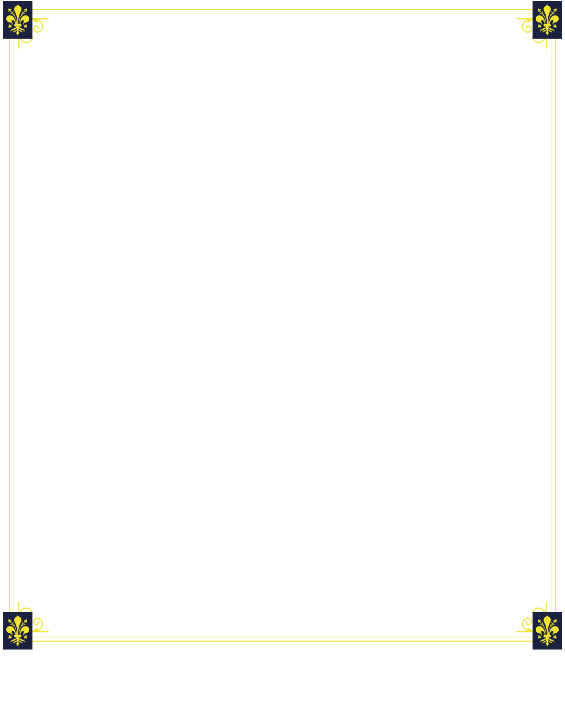
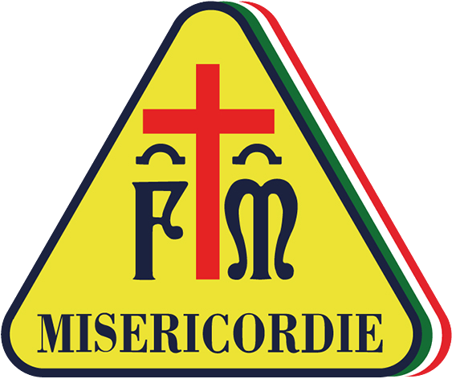

<!doctype html>
<html lang="it">
<meta charset="utf-8">
<title>Esci dal post. Entra nella squadra.</title>
<style>
@font-face{font-family:Jost;src:url('../../../static/fonts/jost-latin.woff2')}
@font-face{font-family:Playfair;src:url('../../../static/fonts/playfair-600-latin.woff2');font-weight:600}
*{box-sizing:border-box}html,body{margin:0;width:1080px;height:1350px}
body{background:#1b223f;color:white;font-family:Jost,sans-serif}
main{position:relative;isolation:isolate;width:1080px;height:1350px;overflow:hidden;background:#1b223f}
.nome{position:absolute;left:108px;top:100px;margin:0;font-size:27px;line-height:36px;font-weight:600}
h1{position:absolute;left:108px;top:149px;margin:0;font-family:Playfair,serif;font-weight:600;letter-spacing:-2px;line-height:1.13;font-size:77px}
h1 span{display:block}h1 .giallo{color:#f2e433;font-size:92px;line-height:1.11}
.scena{position:absolute;left:120px;top:425px;width:840px;height:630px;object-fit:contain}
.invito{position:absolute;left:106px;right:106px;top:1061px;margin:0;text-align:center;font-size:31px;font-weight:500;line-height:40px}
.azione{position:absolute;left:260px;right:260px;top:1114px;height:58px;display:flex;align-items:center;justify-content:center;background:#f2e433;color:#1b223f;border-radius:7px;font-size:30px;line-height:36px;font-weight:700}
.telefono{position:absolute;left:110px;right:110px;top:1179px;margin:0;text-align:center;font-size:26px;line-height:34px;color:white}
.cornice{position:absolute;left:0;top:0;width:1080px;height:1350px;pointer-events:none}
footer{position:absolute;left:0;bottom:0;width:1080px;height:108px;background:white;color:#1b223f;display:flex;align-items:center;gap:26px;padding:11px 89px}
footer img{width:99px;height:82px;object-fit:contain}footer .nome-footer{font-size:27px;line-height:34px;font-weight:600}footer .sito{font-size:27px;line-height:35px}
</style>
<main>
<!-- Filigrane della confraternita per OGNI grafica social (articoli, avvisi, eventi…).
     Copiare questo blocco dentro il contenitore 1080×1350 della grafica, che deve avere
     position:relative e isolation:isolate (senza, le filigrane finiscono sotto il suo sfondo).
     Stemma FM in basso a destra, giglio di Firenze in basso a sinistra, quasi trasparenti,
     DIETRO ai testi (z-index -1): devono stare sul fondo navy, non sopra la foto, e le
     scritte devono restare ben leggibili. CARTELLA = percorso assoluto del repo. -->
<style>
  .filigrana{position:absolute;pointer-events:none;z-index:-1}
  .filigrana-stemma{right:44px;bottom:150px;width:340px;height:340px;opacity:.07;filter:grayscale(1) brightness(2.2)}
  .filigrana-giglio{left:52px;bottom:160px;width:200px;height:274px;opacity:.06}
</style>


<p class="nome">MISERICORDIA DI ARICCIA</p>
<h1><span>Esci dal post.</span><span>Entra nella</span><span class="giallo">squadra.</span></h1>

<p class="invito">Il prossimo volontario potresti essere tu.</p>
<div class="azione">SCRIVI «VOLONTARIO»</div>
<p class="telefono">WhatsApp 348 4068657</p>

<footer><div><div class="nome-footer">Misericordia di Ariccia</div><div class="sito">www.misericordia-ariccia.it</div></div></footer>
</main>
</html>
